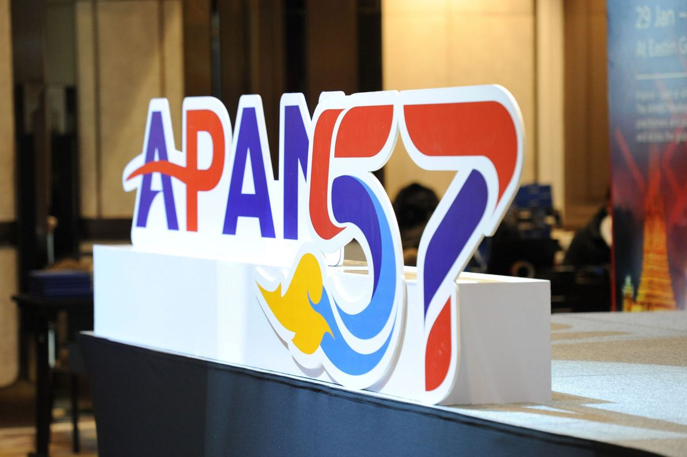
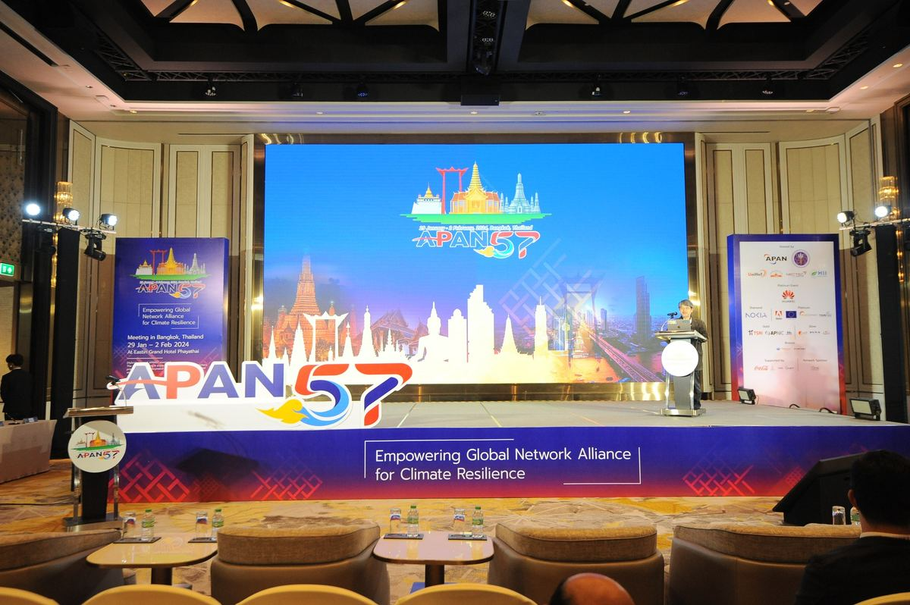

Driving Innovation and Visibility: Highlights from the APAN57 REN Leaders Forum.

Held as a closed-door gathering during APAN57 in Bangkok, Thailand, the REN Leaders Forum brought together executive leaders from National Research and Education Networks (NRENs) across the Asia-Pacific. First introduced at APAN56, this was the second iteration of the forum, established as a strategic space for REN leaders to reflect on shared challenges, exchange insights, and chart future directions for the region's research and education infrastructure.
The APAN57 session featured two focal themes: Generative AI (GenAI) and visibility. The keynote address explored the transformative potential of GenAI in Higher Education, while the subsequent discussion centred on how NRENs can better market their services and communicate their value to member institutions, funders, and broader stakeholders. Together, these conversations signalled a shift in thinking: from building strong technical infrastructure alone, to also building stronger narratives around impact.
The keynote address at the APAN57 REN Leaders Forum was delivered by Amit Pawar, Director of Worldwide Education – Modern Work and Security at Microsoft. Titled "GenAI in Research and Education: NRENs' Perspective," his talk explored how artificial intelligence is already being adopted by educators across the world — and how it can be harnessed to further empower teaching and research communities.
Pawar began by sharing an overview of how AI is being used in education today, illustrating real-world use cases where it supports educators in tasks such as content creation, feedback generation, and classroom management. He highlighted the growing suite of AI-powered tools available to educators, noting their potential to ease workloads and enhance learning outcomes.
A key message throughout his presentation was that AI is not here to replace educators, but to augment their work. He emphasised that human creativity, empathy, and contextual understanding remain at the heart of education, while AI can assist in making day-to-day tasks more efficient and scalable. Pawar also introduced Microsoft Copilot, showcasing its capabilities and sharing examples of how it is being used by educators to improve productivity, streamline administrative work, and support personalised learning experiences. His session offered a clear and encouraging outlook on how NRENs and academic institutions can leverage these emerging technologies not just to modernise, but to empower educators at scale.
Building on years of investment in advanced infrastructure and services, NRENs across the Asia-Pacific are now turning their attention to the next frontier: raising awareness of their impact. While the technical foundations are strong — enabling high-speed connectivity, secure identity services, research collaboration platforms, and more — the focus is now on ensuring these offerings are widely understood, accessible, and utilised to their full potential.
At the APAN57 REN Leaders Forum, participants engaged in a dynamic discussion on how NRENs can more effectively communicate their value to member institutions, policymakers, and funding partners. The aim is not just visibility for its own sake, but to ensure that the services developed by NRENs are actively empowering researchers, educators, and students. Ideas shared included:
The session marked a strategic shift: from viewing communications as secondary to recognising them as a key enabler of engagement, sustainability, and growth. By proactively sharing their contributions and capabilities, NRENs can strengthen relationships with stakeholders and ensure that the infrastructure they've built continues to deliver transformative value across the education and research landscape.

The APAN57 REN Leaders Forum reaffirmed the vital role that NRENs play in supporting research and education across the Asia-Pacific. From exploring the promise of Generative AI to strengthening outreach and engagement, the forum brought to light the evolving priorities of the NREN community — not only to build cutting-edge infrastructure but also to ensure that it is widely recognised, adopted, and impactful.
As the conversations demonstrated, the path forward lies in balancing technical innovation with strategic communication. By embracing this dual mandate, NRENs can amplify their contributions, deepen institutional engagement, and play an even more meaningful role in empowering academia. With continued collaboration, shared learning, and a collective vision, the region's NRENs are well-positioned to lead the way, bridging technology and trust to enable a stronger, more connected research and education ecosystem.
Open the original PDF ↗